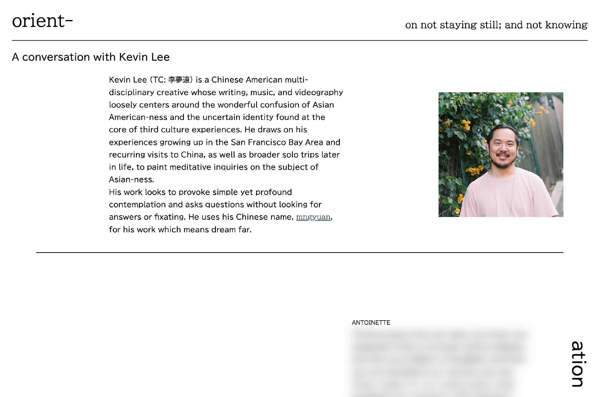

Mentor: Tuan Quoc Pham ↗

Introduction to interviewee: Kevin Lee ↗

Visitors of the site have to hover over certain texts to unblur the related excerpts, reflecting the idea of discovering and learning in a state of confusion.

The print state lacks the interactive element of hovering to unblur text, which is replaced by pages being unbound to obsure the order of text.